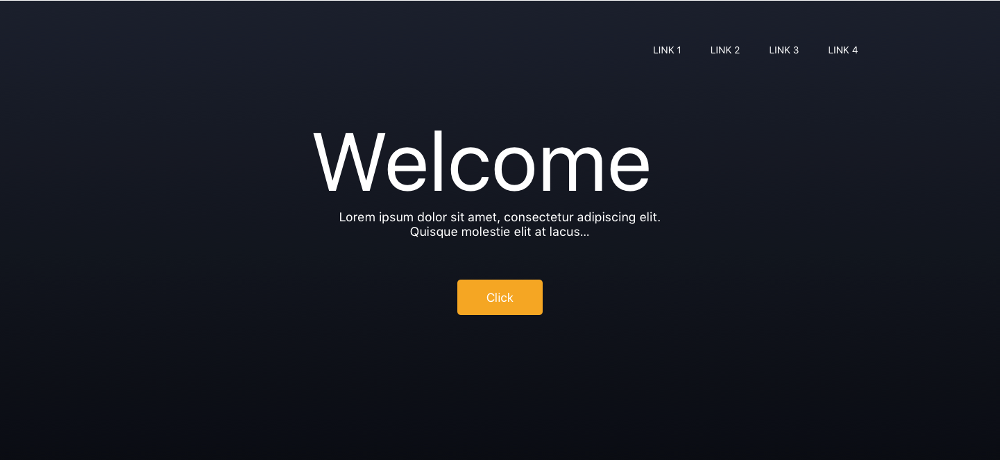

Navigation
There are many simple navigation patterns for both the designer and the developer to follow.
Basics: Menu
There are many simple navigation patterns for both the designer and the developer to follow.
Code Example
<ul class="menu menu-desktop">
<li> <a href="#">Link 1 </a> </li>
<li> <a href="#">Link 2 </a> </li>
<li> <a href="#">Link 3 </a> </li>
<li> <a href="#">Link 4 </a> </li>
</ul>
CSS
.menu {
margin: 0;
list-style-type: none;
font-family: sans-serif;}
.menu > li {
display: table-cell;
vertical-align: middle; }
.menu > li > a {
display: inline-block;
padding: 0.7rem 1rem;
line-height: 1;}
.menu > li > a {
color:$black;
text-decoration: none;
cursor: pointer;}
.menu > li > a:hover {
color: $menu-colour;}
Result
Design Examples

Top Menu
There are many simple navigation patterns for both the designer and the developer to follow.
Code Example
<nav class="top-bar show-for-large">
<div class="top-bar-left nav-desktop">
<ul class="menu">
<li><a href="#"><strong>Logo</strong></a></li>
</ul>
</div>
<div class="top-bar-right nav-desktop">
<ul class="menu menu-desktop">
<li><a href="index.html">Link 1</a></li>
<li><a href="#">Link 2</a></li>
<li><a href="#">Link 3</a></li>
<li><a href="#">Link 4</a></li>
</ul>
</nav>
CSS
.menu {
margin: 0;
list-style-type: none;
font-family: sans-serif;}
.menu > li {
display: table-cell;
vertical-align: middle; }
.menu > li > a {
display: inline-block;
padding: 0.7rem 1rem;
line-height: 1;}
.menu > li > a {
color:$black;
text-decoration: none;
cursor: pointer;}
.menu > li > a:hover {
color: $menu-colour;}
.top-bar {
padding: 0.5rem;}
.top-bar::before, .top-bar::after {
display: table;
content: ' '; }
.top-bar::after {
clear: both; }
.top-bar,.top-bar ul {
background-color: #e6e6e6; }
.top-bar-left {
float: left;}
.top-bar-right {
float: right;}
Responsive Navigation
There are many simple navigation patterns for both the designer and the developer to follow.
Code Example
<div class="off-canvas-content" data-off-canvas-content>
<div class="title-bar show-for-small-only">
<div class="title-bar-left">
<button class="menu-icon" type="button" data-open="mobile-menu"></button>
<span class="title-bar-title">Menu</span>
</div>
</div>
</div>
<div class="off-canvas-wrapper">
<div class="off-canvas-wrapper-inner" data-off-canvas-wrapper>
<div class="off-canvas position-left" id="mobile-menu" data-off-canvas>
<ul>
<li><a href="index.html">Link 1</a></li>
<li><a href="post.html">Link 2</a></li>
<li><a href="#">Link 3</a></li>
<li><a href="#">Link 4</a></li>
<li><a href="#">Link 5</a></li>
<li><a href="#">Link 6</a></li>
</ul>
</div>
</div>
</div>
CSS
.off-canvas-wrapper {
position: relative;
overflow: hidden; }
.off-canvas {
position: fixed;
z-index: 1;
transition: transform 0.5s ease;
-webkit-backface-visibility: hidden;
backface-visibility: hidden;
background: #000000; }
[data-whatinput='mouse'] .off-canvas {
outline: 0; }
.off-canvas.is-transition-overlap {
z-index: 10; }
.off-canvas.is-transition-overlap.is-open {
box-shadow: 0 0 10px rgba(10, 10, 10, 0.7); }
.off-canvas.is-open {
-ms-transform: translate(0, 0);
transform: translate(0, 0); }
.position-left {
top: 0;
left: 0;
width: 250px;
height: 100%;
-ms-transform: translateX(-250px);
transform: translateX(-250px);
overflow-y: auto; }
.position-left.is-open ~ .off-canvas-content {
-ms-transform: translateX(250px);
transform: translateX(250px); }
.position-left.is-transition-push::after {
position: absolute;
top: 0;
right: 0;
height: 100%;
width: 1px;
box-shadow: 0 0 10px rgba(10, 10, 10, 0.7);
content: " "; }
.position-left.is-transition-overlap.is-open ~ .off-canvas-content {
-ms-transform: none;
transform: none; }
#mobile-menu{
padding:20px;}
#mobile-menu li{
list-style:none;}
#mobile-menu a {
line-height: inherit;
color: #ffffff;
text-decoration: none;
line-height:60px;
font-weight:700;
font-size:1.1em}
#mobile-menu .title{
color:#3498db;
font-size:1em;
font-weight:700;}
#mobile-menu i{
display: inline-block;
margin-right: 0.4em;}
External Resources
https://cdnjs.cloudflare.com/ajax/libs/foundation/6.0.1/css/foundation.min.css
https://cdnjs.cloudflare.com/ajax/libs/foundation/6.0.1/js/foundation.js
https://cdnjs.cloudflare.com/ajax/libs/foundation/6.0.1/js/vendor/what-input.min.js
Carousel
There are many simple navigation patterns for both the designer and the developer to follow.
HTML
<div class="orbit" role="region" aria-label="Favorite Space Pictures" data-orbit>
<ul class="orbit-container">
<button class="orbit-previous" aria-label="previous"><span class="show-for-sr">Previous Slide</span></button>
<button class="orbit-next" aria-label="next"><span class="show-for-sr">Next Slide</span></button>
<li class="orbit-slide is-active">
<img src="http://www.bluthemes.com/assets/img/blog/12/balloon.jpg" alt="Flat Design">
</li>
<li class="orbit-slide is-active">
<img src="http://www.bluthemes.com/assets/img/blog/12/airplane.jpg" alt="Flat Design">
</li>
</ul>
</div>
CSS
.orbit {
position: relative; }
.orbit-container {
position: relative;
height: 0;
margin: 0;
list-style: none;
overflow: hidden; }
.orbit-slide {
width: 100%; }
.orbit-slide.no-motionui.is-active {
top: 0;
left: 0; }
.orbit-figure {
margin: 0; }
.orbit-image {
width: 100%;
max-width: 100%;
margin: 0; }
.orbit-previous, .orbit-next {
position: absolute;
top: 50%;
-ms-transform: translateY(-50%);
transform: translateY(-50%);
z-index: 10;
padding: 1rem;
color: #fefefe; }
[data-whatinput='mouse'] .orbit-previous, [data-whatinput='mouse'] .orbit-next {
outline: 0; }
.orbit-previous:hover, .orbit-next:hover, .orbit-previous:active, .orbit-next:active, .orbit-previous:focus, .orbit-next:focus {
background-color: rgba(10, 10, 10, 0.5); }
.orbit-previous {
left: 0; }
.orbit-next {
left: auto;
right: 0; }
External Resources
https://cdnjs.cloudflare.com/ajax/libs/foundation/6.0.1/css/foundation.min.css
https://cdnjs.cloudflare.com/ajax/libs/foundation/6.0.1/js/foundation.js
https://cdnjs.cloudflare.com/ajax/libs/foundation/6.0.1/js/vendor/what-input.min.js
Buttons
There are many simple navigation patterns for both the designer and the developer to follow.
HTML
<a class="button tiny" href="#">Button Tiny</a>
<a class="button small" href="#">Button Small</a>
<a href="#" class="button success">Button Success</a>
<button class="hollow button" href="#">Hallow Button</button>
<button class="hollow button secondary" href="#">Hallow Button Secondary</button>
<a class="button expanded" href="#">Button Expand</a>
CSS
.button {
display: inline-block;
vertical-align: middle;
padding: 0.85em 1em;
border-radius:0.25em;
-webkit-appearance: none;
border: 1px solid transparent;
transition: background-color 0.25s ease-out, color 0.25s ease-out;
font-size: 1.1rem;
line-height: 1;
text-align: center;
cursor: pointer;
background-color: #FF722C;
color: #fefefe; }
.button:hover, .button:focus {
background-color: #d35400;
color: #ffffff; }
.button.tiny
font-size: 0.6rem;
margin-left: 10px:}
.button.small {
font-size: 0.75rem; }
.button.success{
background-color: $orange;
color: #ffffff;}
.button.success:hover, .button.success:focus {
background-color: #d35400;
color: #ffffff; }
.button.hollow {
border: 1px solid #1779ba;
color: #1779ba;
width: 20%;
margin:0 auto;
display:block;}
.button.hollow, .button.hollow:hover, .button.hollow:focus {
background-color: transparent; }
.button.hollow:hover, .button.hollow:focus {
border-color: #0c3d5d;
color: #0c3d5d; }
.button.hollow {
width: 70%;}
.button.expanded {
display: block;
width: 100%;
margin-right: 0;
margin-left: 0;
margin-bottom: 1rem;}
Jumbotron
There are many simple navigation patterns for both the designer and the developer to follow.
HTML
<section class="container">
<div class="row column text-center">
<h2>Heading 2</h2>
<div class="large-6 columns">
<input type="text" placeholder=".large-6 columns">
</div>
<div class="large-6 columns">
<input type="text" placeholder=".large-6 columns">
</div>
<div class="small-12 large-centered columns">
<a href="job.html" class="button success">Button Success</a>
</div>
</div>
</section>
CSS
.container{
padding: 70px 0px;
height: 300px;
background-color: #e6e6e6;
.button.success{
background-color: #cacaca;
width: 33.3%;
color: #ffffff;
border-radius: 0.25em;}
input[type=text]{
text-align: center;
padding: 23px 0px;}
h2{
color:$black;}
}
External Resources
https://cdnjs.cloudflare.com/ajax/libs/foundation/6.0.1/css/foundation.min.css
https://cdnjs.cloudflare.com/ajax/libs/foundation/6.0.1/js/foundation.js
https://cdnjs.cloudflare.com/ajax/libs/foundation/6.0.1/js/vendor/what-input.min.js
Footer
There are many simple navigation patterns for both the designer and the developer to follow.
HTML
<footer>
<div class="wrapper">
<div class="row small-up-2 medium-up-4">
<div class="column">
<h4>Heading</h4>
<a href="#">Link 1</a>
<a href="#">Link 2</a>
<a href="#">Link 3</a>
</div>
<div class="column">
<h4>Heading</h4>
<a href="#">Link 1</a>
<a href="#">Link 2</a>
<a href="#">Link 3</a>
</div>
<div class="column">
<h4>Heading</h4>
<a href="#">Link 1</a>
<a href="#">Link 2</a>
<a href="#">Link 3</a>
</div>
<div class="column">
<h4>Heading</h4>
<a href="#">Link 1</a>
<a href="#">Link 2</a>
<a href="#">Link 3</a>
</div>
</div>
<div class="small-12 large-centered columns">
<div class="copyright">
<p>Coypright 2017 © - Achitectural Elite</p>
</div>
</div>
<div class="large-4 small-centered columns">
<ul class="social">
<i class="fa fa-twitter fa-2x"></i>
<i class="fa fa-facebook-square fa-2x"></i>
<i class="fa fa-instagram fa-2x"></i>
<i class="fa fa-youtube fa-2x"></i>
<i class="fa fa-google-plus fa-2x"></i>
</ul>
</div>
</div>
</footer>
CSS
footer{
background-color: #e6e6e6;
padding: 30px 0px;
height:auto;
width: 100%;}
.wrapper h4, .wrapper a{
display:block;
color:rgba(0, 0, 0, 0.54);
padding:10px 0;
font-size: 14px;
margin : auto auto 0 50px;}
.copyright p{
color:rgba(0, 0, 0, 0.54);
padding:20px 0;
font-size: 14px;
text-align: center;
}
.social{
width: 100%;
height: auto;}
.social i{
display: inline-block;
color:rgba(0, 0, 0, 0.54);
margin-left: 5px;
}
@media (max-width: 39.9375em) {
.social i{
padding: 10px;}
}
External Resources
Use the Official Font Awesome SASS Ruby Gem
1.Add this line to your application's Gemfile: : gem 'font-awesome-sass'
2.And then execute: $ bundle
3.Or install it yourself as: $ gem install font-awesome-sass
Cards
There are many simple navigation patterns for both the designer and the developer to follow.
HTML
<main>
<div class="row">
<div class="medium-4 columns">
<div class="card">
<img src="https://image.slidesharecdn.com/22flatbackgroundcolors-140206091312-phpapp01/95/22-flat-background-colors-for-your-presentation-free-powerpoint-template-10-638.jpg?cb=1460625397">
<div class="card-section">
<p>#FC57SE</p>
<p>#rgb(252,87,94)</p>
</div>
</div>
</div>
<div class="medium-4 columns">
<div class="card">
<img src="https://image.slidesharecdn.com/22flatbackgroundcolors-140206091312-phpapp01/95/22-flat-background-colors-for-your-presentation-free-powerpoint-template-3-638.jpg?cb=1460625397">
<div class="card-section">
<p>#59AE7F</p>
<p>#rgb(89,174,127)</p>
</div>
</div>
</div>
<div class="medium-4 columns">
<div class="card">
<img src="https://image.slidesharecdn.com/22flatbackgroundcolors-140206091312-phpapp01/95/22-flat-background-colors-for-your-presentation-free-powerpoint-template-15-638.jpg?cb=1460625397">
<div class="card-section">
<p>#F2784B</p>
<p>#rgb(242,120,75)</p>
</div>
</div>
</div>
<div class="medium-4 columns">
<div class="card">
<img src="https://image.slidesharecdn.com/22flatbackgroundcolors-140206091312-phpapp01/95/22-flat-background-colors-for-your-presentation-free-powerpoint-template-4-638.jpg?cb=1460625397">
<div class="card-section">
<p>#00B5B5</p>
<p>#rgb(0,181,181)</p>
</div>
</div>
</div>
<div class="medium-4 columns">
<div class="card">
<img src="https://image.slidesharecdn.com/22flatbackgroundcolors-140206091312-phpapp01/95/22-flat-background-colors-for-your-presentation-free-powerpoint-template-14-638.jpg?cb=1460625397">
<div class="card-section">
<p>#FE8A71</p>
<p>#rgb(254,138,113)</p>
</div>
</div>
</div>
<div class="medium-4 columns">
<div class="card">
<img src="https://image.slidesharecdn.com/22flatbackgroundcolors-140206091312-phpapp01/95/22-flat-background-colors-for-your-presentation-free-powerpoint-template-8-638.jpg?cb=1460625397">
<div class="card-section">
<p>#CD6B97</p>
<p>#rgb(205,107,151)</p>
</div>
</div>
</div>
</div>
</main>
CSS
main{
background-color: #ffffff;
padding: 70px 0px;}
.card {
margin-bottom: 1rem;
border: 1px solid #e6e6e6;
border-radius: 0;
background: #fefefe;
box-shadow: none;
overflow: hidden;
color:#000000;}
.card > :last-child {
margin-bottom: 0; }
.card-section {
padding: 1rem; }
.card-section > :last-child {
margin-bottom: 0;}
.card-section a{
font-weight: 600;
text-align: center;}
.card-section a:hover{
text-decoration: underline;}